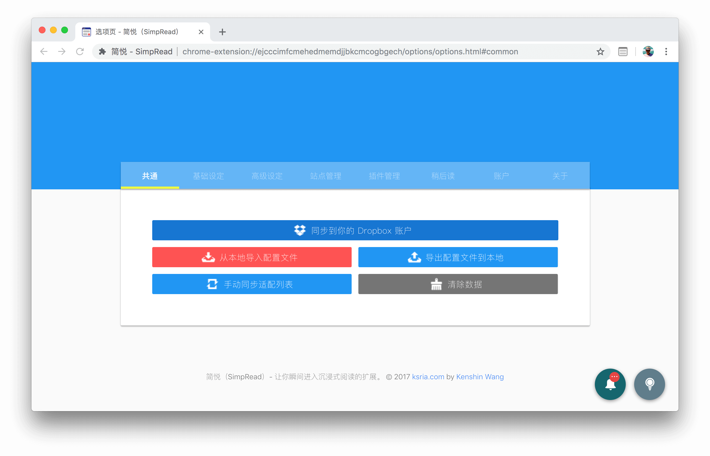
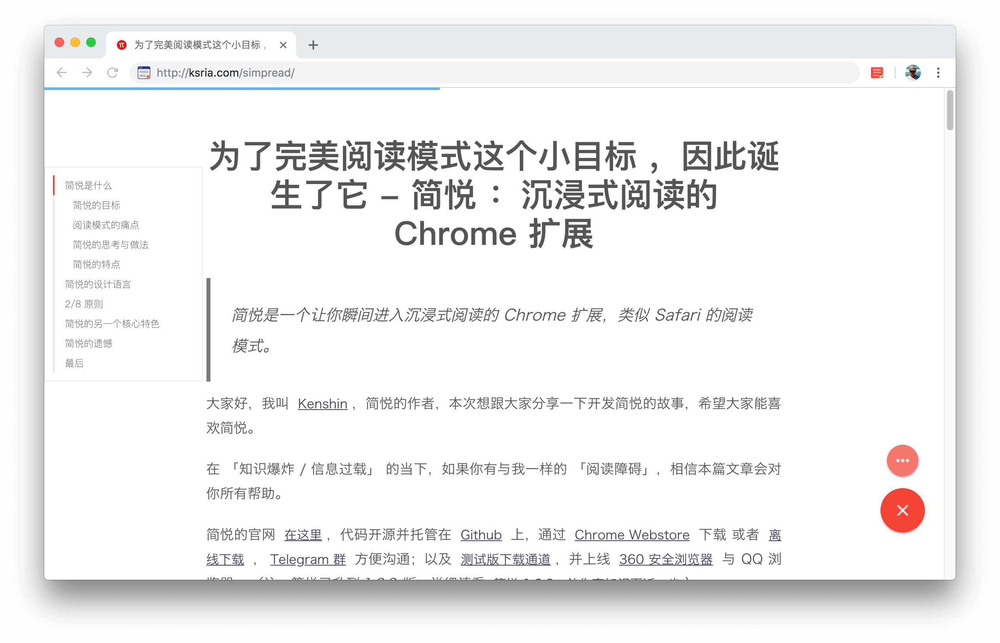
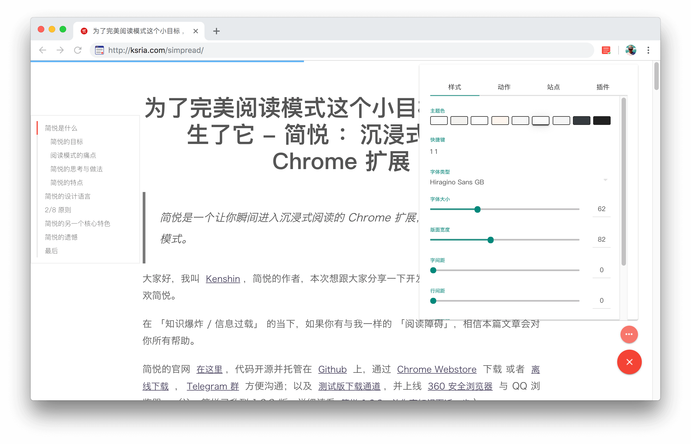
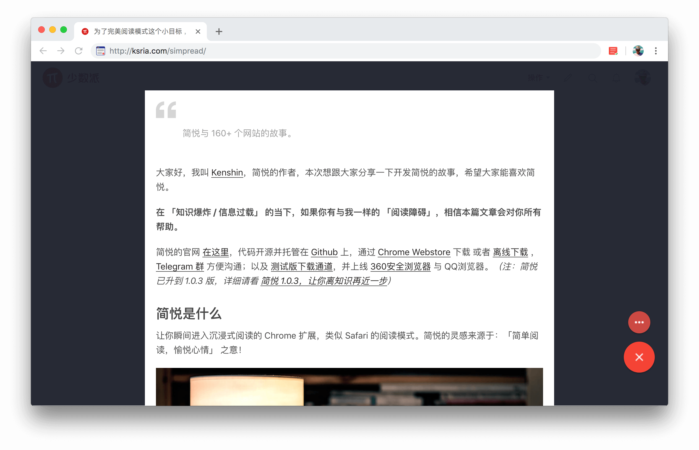
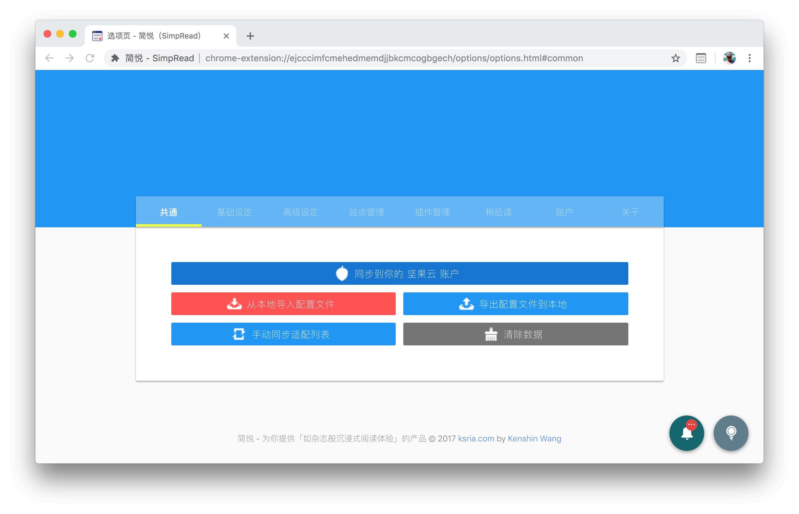

简于型 · 悦于心
简悦 - 为你提供「如杂志般沉浸式阅读体验」的扩展
简悦是 新一代 的阅读模式产品，虽然它支持 开箱即用。
但与此同时为了满足不同用户的阅读需求，因此它具有丰富的定制化和可玩性。
所以让我们花几分钟的时间来了解一下。
但与此同时为了满足不同用户的阅读需求，因此它具有丰富的定制化和可玩性。
所以让我们花几分钟的时间来了解一下。
首次安装（或升级）
简悦支持「开箱即用」，好好利用这里可以让简悦为你更好的工作。

阅读模式
阅读模式虽然不是简悦独创，但简悦的阅读模式确实「与众不同」。

阅读模式 · 控制栏
这是阅读模式的 「控制中心」，简悦的 「全部功能」均在这里。

聚焦模式
不改变当前页面的结构，仅仅高亮需要阅读的部分

选项页
简悦支持很多高级玩法，好好利用这些选项，能让你的阅读模式「独一无二」。

简于型 · 悦于心